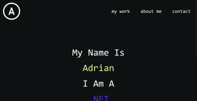

Fryele Stallklubb
This a ongoing project of mine that is a website for a horseback riding club.
Technologies used:
My Portfolio Website
This is my portfolio website im working on. New to this project is that i am using TailwindCSS. I really like it so far
Technologies used: